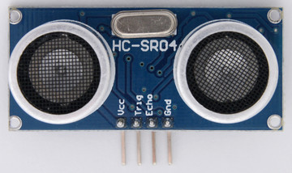
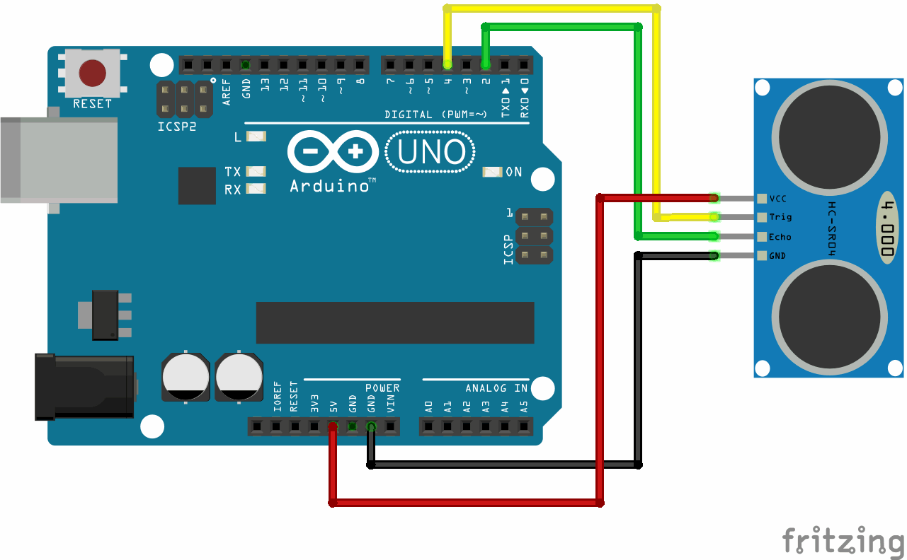
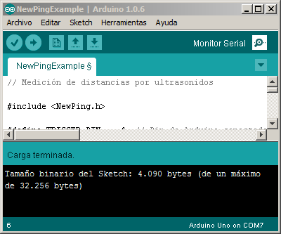
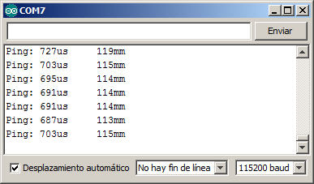

1. Ultrasonic distance sensor¶
{kind=link}
Goals¶
- Understand the operation of the ultrasonic distance sensor.
- Measure distances with an ultrasonic distance sensor.
Ultrasonic sensor¶
This sensor has a small speaker that beeps and a sensor microphone that detects the beep. The device calculates the time it takes for sound to travel to an object and return reflected. The distance from the sensor to the object is calculated from the speed of sound in air and the time it takes for sound to travel that distance.
The emitted beep has a frequency of 40kHz. This frequency is well above 20kHz, which is the highest frequency that humans can perceive. For this reason, this high frequency sound is called ultrasound.
There are several sensor models on the market, the best known and most affordable are the SR04 model and the more advanced version SRF05. In this tutorial the SR04 model is explained. The explanation is valid for more advanced models, taking into account that these have greater capacity or added features.
SR04 Sensor Characteristics¶
This ultrasonic sensor has the following characteristics:
- Sensing distance: 2cm - 400cm
- Resolution: 0.3cm
- Sound frequency: 40kHz
- Effective angle: 15º
- Supply voltage: 5V
- Current Consumption: 15mA
Library for ultrasonic sensors¶
To handle ultrasonic sensors there are several working libraries. The most accurate standard library that can be used is NewPing. To install the library, follow these steps:
- Download the library
- Save the file NewPing_v1.9.4.zip on the computer
- Open the Arduino graphical environment
- In the Sketch tab.. Import library.. click 'Add Library...'
- Find the downloaded file and after selecting it, press 'Open'
- Check that in the Sketch tab.. Import library.. a new library called NewPing appears
With these steps the library will be correctly installed.
Distance measurement¶
To measure distances with the SR04 sensor, the following steps will be followed:
Connect the SR04 sensor to the Arduino board according to the following scheme:
Copy the following program, compile it and download it to the Arduino board.
1 2 3 4 5 6 7 8 9 10 11 12 13 14 15 16 17 18 19 20 21 22 23 24 25 26 27 28 29 30 31 32
// Medición de distancias por ultrasonidos. // Método basado en la velocidad del sonido. #include <NewPing.h> #define TRIGGER_PIN 4 // Pin de Arduino conectado a la patilla Trigger, en el sensor de ultrasonidos. #define ECHO_PIN 2 // Pin de Arduino conectado a la patilla Echo, en el sensor de ultrasonidos. #define MAX_DISTANCE 200 // Distancia máxima que podrá medir el sensor. // Esta distancia puede llegar a valer 400cm #define SOUND_SPEED 0.171 // La mitad de la velocidad del sonido en el aire, medida en [mm/us] NewPing sonar(TRIGGER_PIN, ECHO_PIN, MAX_DISTANCE); // Configuración de la librería NewPing void setup() { Serial.begin(115200); // Abre las comunicaciones serie entre Arduino y el ordenador } void loop() { int microseconds; // Tiempo que tarda el sonido del sensor en rebotar y volver int distance; // Distancia al obstáculo en centímetros delay(50); // Espera 50 milisegundos entre dos ping consecutivos. // Este tiempo evita errores producidos por el eco. microseconds = sonar.ping(); // Mide el tiempo que tarda el sonido en rebotar distance = microseconds * SOUND_SPEED; // Calcula la distancia al objeto en milímetros Serial.print("Ping: "); // Envía al ordenador un mensaje con la distancia medida Serial.print(microseconds); Serial.print("us\t"); Serial.print(distance); Serial.println("mm"); }
Open the serial monitor (Serial Monitor) by clicking the icon that appears at the top right in the Arduino graphical environment.
In the new window that appears, choose the transmission speed in the box that appears at the bottom right. In this case, the programmed speed is 115200 bauds.
The chart should continuously display time and distance information.

{kind=link}
At this point, if all went well, the Arduino will be continuously measuring the distance between the sensor and the objects placed in front of it. This distance is sent to the computer through the serial port (through the USB cable) to display it on the screen.
Sensor adjustment¶
Sensor adjustment allows measurements to be more accurate. In order to adjust the sensor, it is necessary to correct multiple parameters that can influence the measurement. The speed of sound in air, atmospheric pressure, the speed of the sensor's internal timer, etc. To avoid the complexity of adjusting all these parameters one by one, an adjustment called two-point adjustment is going to be carried out.
First, a measurement must be made at a known distance, close to the sensor. Then another measurement must be made at a known distance, further from the sensor.
The first measurement can correct what is called a zero adjustment. The second measurement is used to perform the ramp adjustment. The measurements must be entered in a table such as the following:
Table 1.¶ Extent Time Distance Measure 1 247us 50mm Measure 2 1123us 200mm
From this table, a better fit of the measurement can be made with the Arduino command map() :
distance = map(microseconds, 247, 1123, 50, 200);
The first argument is the time measurement performed by the sensor. The next two arguments are the bounce times to the near and far object. The next two arguments are the distances of the near and far object.
The modified program is as follows.
1 2 3 4 5 6 7 8 9 10 11 12 13 14 15 16 17 18 19 20 21 22 23 24 25 26 27 28 29 30 31 32 33 34 35 36 37 38 | // Medición de distancias por ultrasonidos.
// Método basado en el ajuste de dos puntos.
#include <NewPing.h>
#define TRIGGER_PIN 4 // Pin de Arduino conectado a la patilla Trigger, en el sensor de ultrasonidos.
#define ECHO_PIN 2 // Pin de Arduino conectado a la patilla Echo, en el sensor de ultrasonidos.
#define MAX_DISTANCE 200 // Distancia máxima que podrá medir el sensor.
// Esta distancia puede llegar a valer 400cm
const int time1 = 247; // Tiempo, en microsegundos, del ping al objeto cercano
const int distance1 = 50; // Distancia, en milímetros, al objeto cercano
const int time2 = 1123; // Tiempo, en microsegundos, del ping al objeto lejano
const int distance2 = 200; // Distancia, en milímetros, al objeto lejano
NewPing sonar(TRIGGER_PIN, ECHO_PIN, MAX_DISTANCE); // Configuración de la librería NewPing
int microseconds; // Tiempo que tarda el sonido del sensor en rebotar y volver
int distance; // Distancia al obstáculo en centímetros
void setup() {
Serial.begin(115200); // Abre las comunicaciones serie entre Arduino y el ordenador
}
void loop() {
delay(50); // Espera 50 milisegundos entre dos ping consecutivos.
// Este tiempo evita errores producidos por el eco.
microseconds = sonar.ping(); // Mide el tiempo que tarda el sonido en rebotar
// Calcula con precisión la distancia al objeto en milímetros
distance = map(microseconds, time1, time2, distance1, distance2);
Serial.print("Ping: "); // Envía al ordenador un mensaje con la distancia medida
Serial.print(microseconds);
Serial.print("us\t");
Serial.print(distance);
Serial.println("mm");
}
|
Exercises¶
Perform measurements for two-point adjustment with a specific sensor. Modify the previous program to get the sensor to return exact measurements with its own measurements.
Each sensor will give different values for the 4 numbers in table 1, depending on the altitude at which we are, the temperature and other sensor parameters.
Show the measured distance on the 7-segment display with the following program.
1 2 3 4 5 6 7 8 9 10 11 12 13 14 15 16 17 18 19 20 21 22 23 24 25 26 27 28 29 30 31
// Medición de distancias por ultrasonidos. // Mostrar el valor de distancia en display de 7 segmentos. #include <Wire.h> #include <PC42.h> #include <NewPing.h> #define TRIGGER_PIN 4 // Pin de Arduino conectado a la patilla Trigger, en el sensor de ultrasonidos. #define ECHO_PIN 2 // Pin de Arduino conectado a la patilla Echo, en el sensor de ultrasonidos. #define MAX_DISTANCE 200 // Distancia máxima que podrá medir el sensor. // Esta distancia puede llegar a valer 400cm #define SOUND_SPEED 0.171 // La mitad de la velocidad del sonido en el aire, medida en [mm/us] NewPing sonar(TRIGGER_PIN, ECHO_PIN, MAX_DISTANCE); // Configuración de la librería NewPing int distance, microseconds; void setup() { pc.begin(); // Inicializar el módulo PC42 }; void loop() { delay(50); // Esperar 50 milisegundos entre dos ping consecutivos. // Este tiempo evita errores producidos por el eco. microseconds = sonar.ping(); // Medir el tiempo que tarda el sonido en rebotar distance = microseconds * SOUND_SPEED; // Calcular la distancia al objeto en milímetros pc.dispWrite(distance); // Mostrar la distancia en el display de 7 segmentos }
Turn on a bar of LEDs that represents the distance of an object from the ultrasonic sensor. Complete the program so that the bar occupies 6 leds.
1 2 3 4 5 6 7 8 9 10 11 12 13 14 15 16 17 18 19 20 21 22 23 24 25 26 27 28 29 30 31 32 33 34 35 36 37 38 39 40 41 42
// Medición de distancias por ultrasonidos. // Mostrar el valor de distancia en display de 7 segmentos. #include <Wire.h> #include <PC42.h> #include <NewPing.h> #define TRIGGER_PIN 4 // Pin de Arduino conectado a la patilla Trigger, en el sensor de ultrasonidos. #define ECHO_PIN 2 // Pin de Arduino conectado a la patilla Echo, en el sensor de ultrasonidos. #define MAX_DISTANCE 200 // Distancia máxima que podrá medir el sensor. // Esta distancia puede llegar a valer 400cm #define SOUND_SPEED 0.171 // La mitad de la velocidad del sonido en el aire, medida en [mm/us] NewPing sonar(TRIGGER_PIN, ECHO_PIN, MAX_DISTANCE); // Configuración de la librería NewPing int microseconds; // Tiempo que tarda el sonido del sensor en rebotar y volver int distance; // Distancia al obstaculo en centímetros void setup() { pc.begin(); // Inicializar el módulo PC42 }; void loop() { delay(50); // Esperar 50 milisegundos entre dos ping consecutivos. // Este tiempo evita errores producidos por el eco. microseconds = sonar.ping(); // Medir el tiempo que tarda el sonido en rebotar distance = microseconds * SOUND_SPEED; // Calcular la distancia al objeto en milímetros // Encender el led 1 si la distancia es mayor de 40mm if (distance > 40) pc.ledWrite(1, LED_ON); else pc.ledWrite(1, LED_OFF); // Encender el led 2 si la distancia es mayor de 80mm if (distance > 80) pc.ledWrite(1, LED_ON); else pc.ledWrite(1, LED_OFF); }